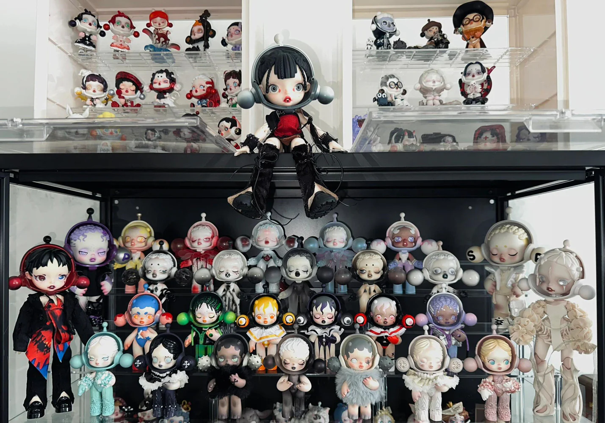

Games
I play games in my free time, and it has become one of my favorite ways to relax and unwind. Some of my go-to games include Roblox, where I enjoy exploring different worlds, creating my own games, and interacting with friends in virtual environments. I also love playing Mobile Legends: Bang Bang (MLBB), which challenges me to think strategically, coordinate with teammates, and improve my skills in real-time battles. Aside from these, I try out various other games, whether they are casual mobile games or more immersive PC experiences, as they help me sharpen my problem-solving abilities, relieve stress, and have fun during my leisure time. Gaming has become more than just a hobby for me—it’s a way to connect with friends, explore new ideas, and experience exciting challenges from the comfort of my own home.
Collecting Toys
One of my favorite hobbies is collecting toys, which allows me to appreciate creativity, craftsmanship, and design in a very personal way. I especially enjoy collecting Skull Panda figures, whose unique and edgy designs always catch my attention and make for standout pieces in my collection. Another highlight of my hobby is collecting Gundam models, where I not only admire their intricate details but also take pleasure in assembling and customizing them, turning each model into a miniature work of art. Collecting toys is more than just acquiring items; it’s about the stories, characters, and experiences they represent. Over time, my collection has grown into a reflection of my tastes and interests, and it gives me immense satisfaction to display and share these figures with friends who appreciate the same passion. This hobby nurtures my creativity, patience, and attention to detail, making it both fun and rewarding.
